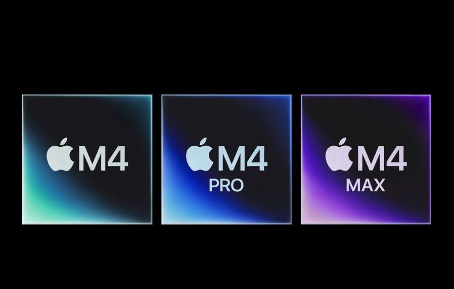

Master Apple Silicon

What Is Apple Silicon?
When talking over Apple silicon, we are referring to their most recent format of not only Computer chips, but phones, audio devices, and more. The switch to sillica was prompted by the mainly the fact that sillicon is far more conductive than traditional materials used in computer chips. Another idea was the fact of switching to an ARM based architecure. With having a simplified architecure, a fast responsive sillicon based chip makes everything far more seamless.
How Does Apple Silicon Imapct You?
Whether you're a develoepr or a college student who will have only a couple tabs open, there is versatility in all cases. There are plenty of adpatations for the consumer who si looking to get into Apple Silicon. Apple Silicon was made to conserve time with its speed. How so? Well the faster you can compute that equation using AI or render that 4k video, the faster you can get your moneys worth.
Where do I start?
When it comes to choosign what's right for you, it all comes down to what you need. Modern Apple Silicon allows thsoe who have somewaht heavy workloads to even see the benefits while just using a Macbook Air. For developers and those building AI based tools, the Pro line-up is the best option for those needing that extra coomputing power.
Where do the Differrences Come from?
The main discrepancy's comes down to the cores. Apple has figured out an equation to balancing E and P cores, for maximized power and efficiency. As you go up the line, your dedicated CPU cores grow and so do your GPU cores. granted that they have a high ticket prices, these computers are there to last at least 10 years on your desk. Here is an Example:
M4:
M4 PRO:
M4 Max:
- 10-Core-CPU
- 10-Core-GPU
- 16 Core Neural engine
- 16-24GB unified Memory
- 512GB-2TB SSD
- 14-Core-CPU
- 20-Core-GPU
- 16 Core Neural Engine
- 16-48GB unified Memory
- 512GB-2TB SSD
- 14 to 16-Core-CPU
- 32 to 40-Core-GPU
- 16 Core Neural Engine
- 36 to 48GB unified Memory
- 1TB-4TB SSD
Is the Switch impossible?
Switching to Apple Silicon cna always seem intimidating. But everyone's had to do it that now uses Apple Silicon products. You can't be hung up in the idea of the switch, but you should focus on what the switch will do for you!
When do I know it's Not For Me?
Theres's two very big and obvious circumstances. one is if you're an engineer utilizing the traditional platforms. platforms like auto-cad, microsoft access, and so forth are not accessible as they have yet to have the application translated for Apple's silicon. That is why when you see engineers, they sport the windows gaming laptops. Apples silicon just simply cannot communicate with the applications. Does that mean they can handle other heavy applications? No, many other high demand careers like video editing, software developers, and AI developers utilize these laptops because of their performance.
Secondly, if you have tried the switch and really, it doesn't seem like it's for you, then it's okay to make the return and decommit from the world of Apple. As we say, it's not up to us to convince you, we want to drive the knowledge so you make the right
A Conclusion
Hopefully we have convinced you to look even deeper and figure out whats right for you. Apple silicon can benefit many in any way, the oppurtunities are endless. If you make a switch, we believe that you won't regret it one bit!